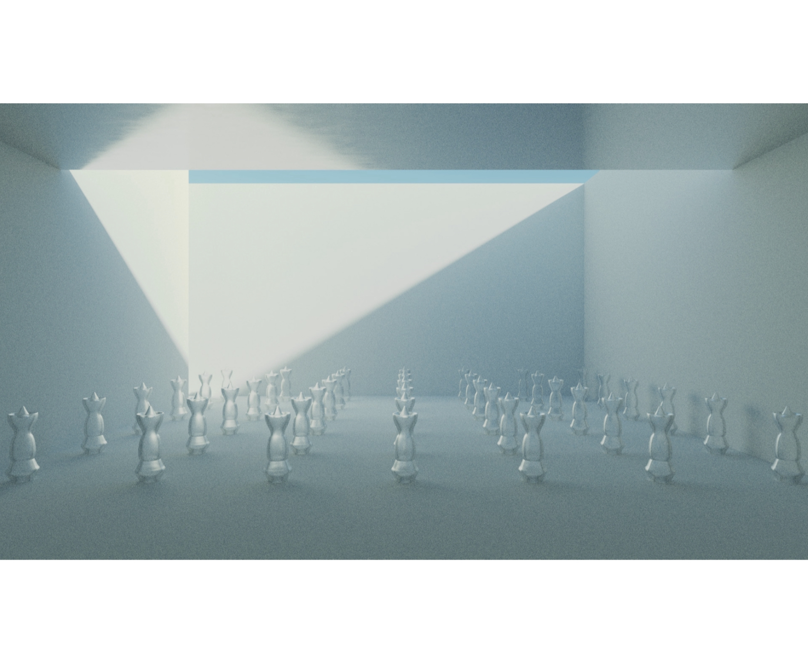
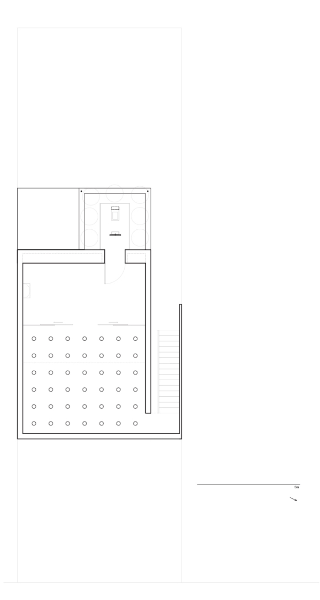

Une habitation qui s’inspire de la connexion avec la nature présente toutes les recherches et œuvres de Rémy Fortin. Basé sur le parcours d’une ascension en montagne, le jardin à habiter offre de multiples points de vue sur différents espaces arborant une végétation unique tirée de la flore québécoise. L’atelier situé au deuxième étage vient séparer les espaces physiquement, mais aussi psychologiquement. Un jardin monumental de sculptures prend alors forme. Utilisée sous plusieurs formes, chaque sculpture de verre soufflé par verre d’onge devient le cœur des systèmes passifs de l’habitation. La maison située au cœur de Maizeret devient alors un refuge de tranquillité.
fig. 1
fig. 2

fig. 3

fig. 4

fig. 5

fig. 6

fig. 7 
fig. 8

fig. 9 - rdc

fig. 10 - étage 
fig. 11 - élévation avant

fig. 11 - élévation arrière

fig. 11 - coupe

Atelier 2 - Chargé de cours : Thomas Bernier
voir la présentation